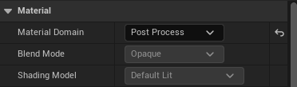
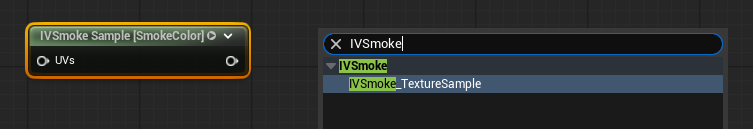
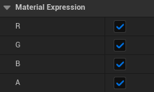
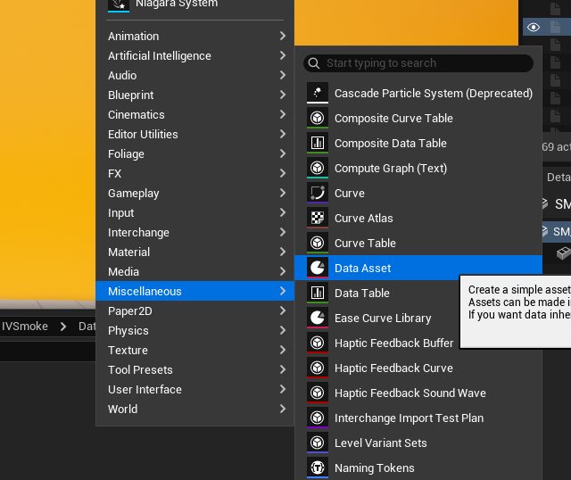
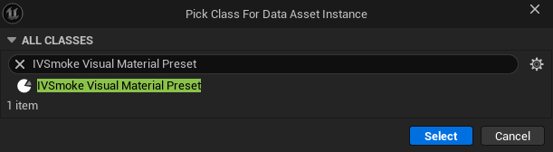
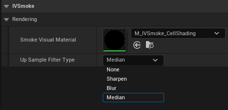
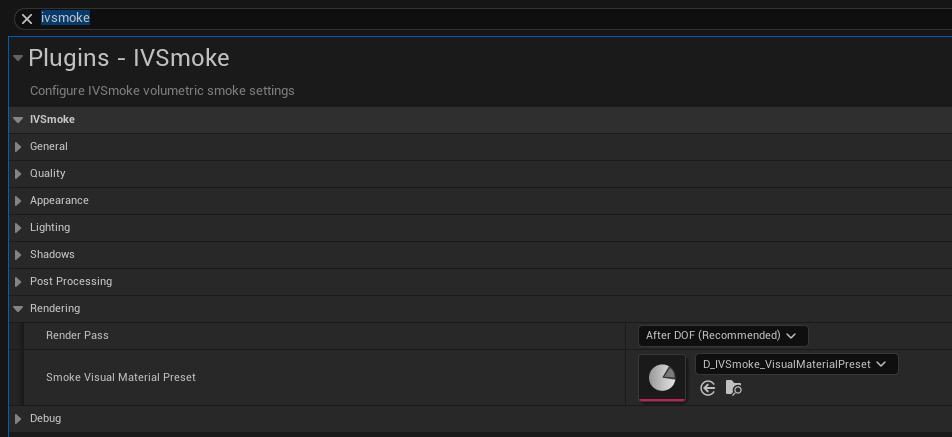
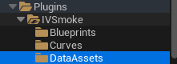
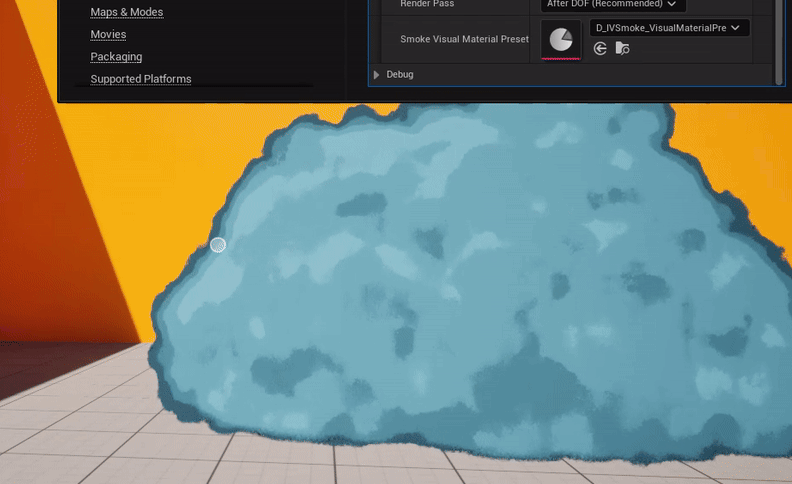

IVSmoke renders smoke through a built-in composite shader by default. If you want full control over how the smoke is blended with the scene, you can supply your own Post Process material and register it via a Visual Material Preset. This guide walks through creating the material, wiring up the IVSmoke texture nodes, and registering the preset in Project Settings.
1. Creating the Material
Create a new material and set its Material Domain to Post Process. Inside the material, you define how the Scene and Smoke textures are mixed.


IVSmoke_TextureSample Node
Search for IVSmoke_TextureSample in the material palette and add it to your graph. This node gives you access to the smoke render targets.

Select the node and choose a Texture Type:

| Texture Type | Channels | Description |
|---|---|---|
| SmokeColor | (R, G, B, A) | Smoke albedo color + smoke alpha |
| SmokeLocalPos | (X, Y, Z, 0) | Smoke local position |
| SceneColor | (R, G, B, A) | Scene color behind the smoke |
| SmokeWorldPosLinearDepth | (X, Y, Z, Depth) | Smoke world position + linear depth |
Internally, these textures are mapped to PostProcessInput[0, 1, 2, 4] on the SceneTexture node.
Use the Color Mask option to select which channels the node outputs:

2. Creating a Visual Material Preset
The preset is a Data Asset that links your material to the IVSmoke render pipeline.
- In the Content Drawer, right-click and select Miscellaneous > Data Asset.
- Choose IVSmoke Visual Material Preset as the class.


Preset Properties

| Property | Description |
|---|---|
| Smoke Visual Material | Slot for your custom smoke material. If empty, the built-in composite shader is used. |
| UpSample Filter Type | Filter applied after upsampling the ray marching result. See options below. |
UpSample Filter Type options:
- None — No filtering.
- Sharpen — Enhances edges and details, making smoke contours more defined.
- Blur — Softens with Gaussian blur for a smooth, natural look.
- Median — Removes noise while preserving edges.
3. Registering the Preset
Open Edit > Project Settings and search for IVSmoke. In the Rendering section, assign your preset to the Smoke Visual Material Preset slot.

Example
A working demo preset ships with the plugin:
Plugins > IVSmoke > DataAssets > D_IVSmoke_VisualMaterialPreset


Copyright (c) 2026, Team SDB. All rights reserved.